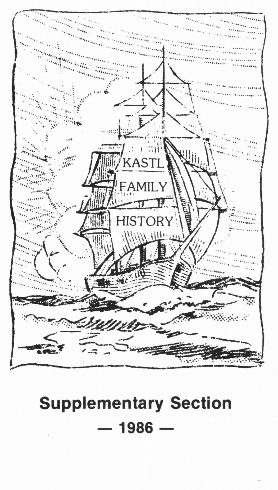

The book · Supplementary Section (1986)
Supplement, title page Supplementary Section


Transcription

Supplementary Section
— 1986 —
Transcriber’s notes
Title page of the 1986 supplement to the Kastl Family History. The words 'KASTL FAMILY HISTORY' appear only as lettering on the ship's sails within the illustration.